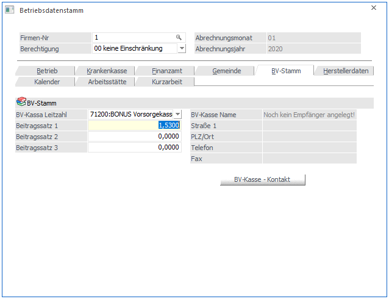
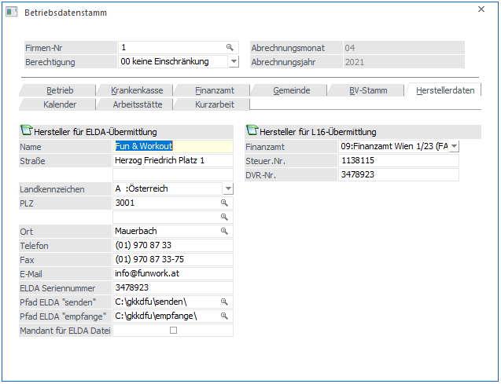

In diesem Register können die Stammdaten für die BV-Kassa angelegt werden.

Ø BV-Kassa Leitzahl:
In diesem Feld kann aus einer Auswahllistbox die entsprechende Vorsorgekasse gewählt werden.
Ø Beitragssatz 1 bis Beitragssatz 3:
Hier können bis zu 3 unterschiedliche BV-Beitragssätze hinterlegt werden. Dabei ist zu beachten, dass der Beitragssatz 1 hinterlegt werden muss. Der Beitragssatz muss mindestens 1,53 % betragen, kann aber auch höher sein.
Ø BV-Kasse - Kontakt
Durch Anklicken des BV-Kasse - Kontakt-Buttons kann der Name und die Adresse der BV-Kasse hinterlegt werden. Diese Informationen werden nur für den direkten Kontakt mit der BV-Kasse benötigt (für die Lohnverrechnung selbst nicht relevant).
Die hier angelegten BV-Stämme und %-Sätze können im AN-Stamm entsprechend hinterlegt werden.
Herstellerdaten
In diesem Teil der Betriebsdaten müssen die Herstellerdaten hinterlegt werden. Diese werden für die Übermittlung von elektronischen Meldungen an die GKK benötigt. Im Normalfall werden hier die gleichen Werte wie in der Rubrik "Betrieb" eingetragen. Dieser Teil ist aber nur dann bearbeitbar, wenn im Register "Betrieb" die Option "Hauptbetrieb" aktiviert wurde.
Wenn die Meldungen allerdings von einer Clearingstelle aus erfolgen (z.B. wenn die Meldungen vom Steuerberater durchgeführt werden), müssen hier die Daten der Clearingstelle angeführt werden.
